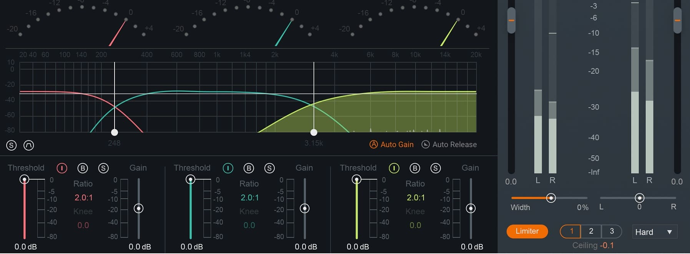

Après avoir composer, il est important de mettre des effets a nos mélodies et nos Drums.
Sans effets, notre instru va sembler brut et ne va pas sonner bien.
Les effets se trouve egalement sous forme de plugins.
Exemple de plugin d'effets trouvable sur internet que j'ai acheter (toujours pas).
